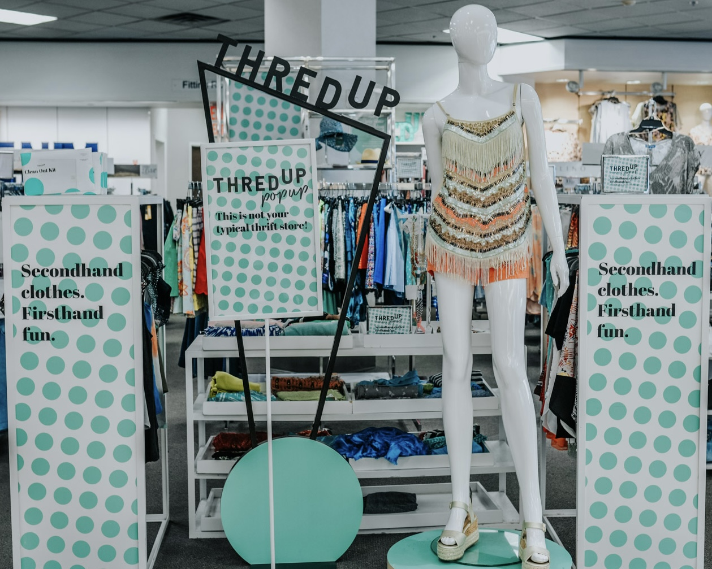
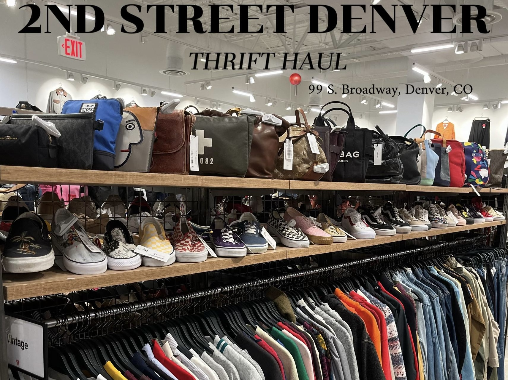

While affordability is one of the main appeals of thrifting, its influence on younger and older generations is another reason why it has become so popular. Social media influencers have started glorifying the idea of thrifting. With the help of influencers, apps like ThreadUp and Depop have been created to help people thrift online, and in person.

ThreadUp has experienced 68% of the younger generations shopping for secondhand apparel in 2024. If these numbers keep increasing, with the influence only getting more popular, ThreadUp has predicted that the U.S. secondhand apparel market will reach $74 billion by 2029.
According to IPSOS, a huge reason thrift shopping became so popular is due to the help of TikTok. Influencers were posting their ‘thrift hauls’ and talking more about thrifting, and making sure to provide specific thrift stores for their fans to look at. Making the generations watching them more interested in thrifting.
